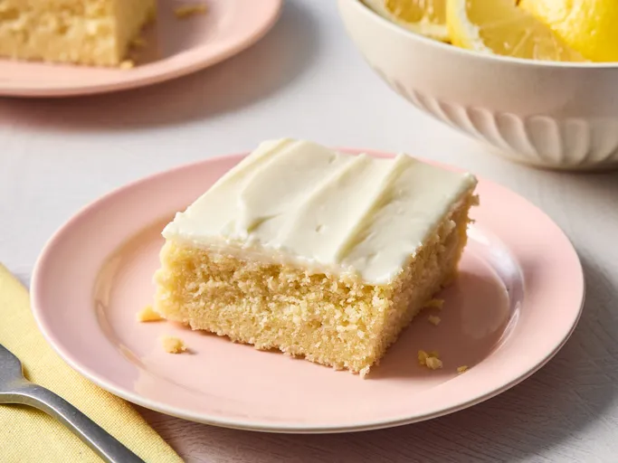

Lemon Cake

Description
Moist and soft lemon cake, made with simple ingredients.
Ingredients
1 cup white sugar
1/2 cub butter
2 large eggs
2 teaspoons vanilla extract
1 1/2 cups all-purpose flour
1 3/4 teaspoons baking powder
3/4 cup milk
1 tablespoon lemon zest
1 tablespoon lemon juice
Directions
Gather the ingredients. Preheat the oven to 175° C. Grease a 9-inch square baking pan.
Beat sugar and butter together in a mixing bowl using an electric mixer until light and fluffy. Beat in eggs and vanilla extract until well combined.
Sift flour and baking powder together in a separate bowl; add to creamed mixture until incorporated.
Pour in milk, lemon zest, and lemon juice; mix until smooth.
Spoon batter into the prepared pan.
Bake in the preheated oven until a toothpick inserted into the center comes out clean, about 35 minutes.
Let cake cool before cutting into squares. Enjoy!